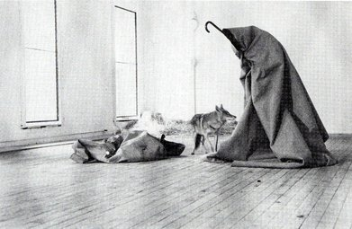

I Like America and America Likes Me
Joseph Beuys · 1974 · Action; documentary photograph by Caroline Tisdall
In copyright. Look and learn: shown for study, not for download.
In May 1974 Beuys flew from Germany to New York, where he was at once blindfolded, wrapped in felt, laid on a stretcher and driven by ambulance to the René Block Gallery in SoHo. He spent three consecutive days there, eight hours each day, in an enclosure with a live coyote named Little John. Fifty copies of that day's Wall Street Journal were delivered each day. He left as he had come. He visited the United States only three times in his life.